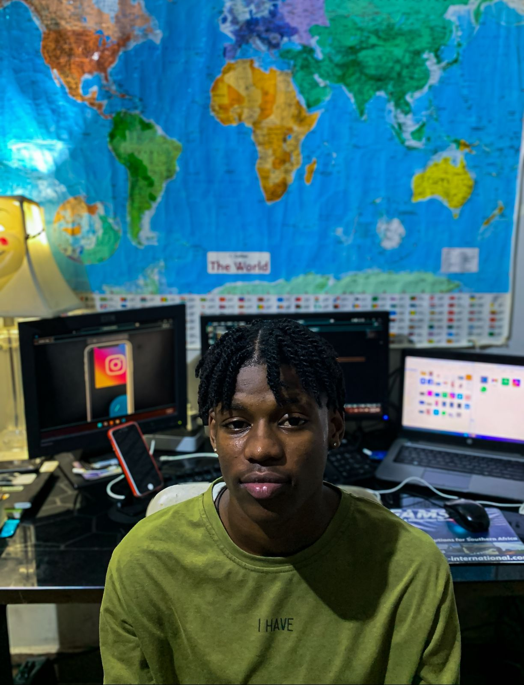
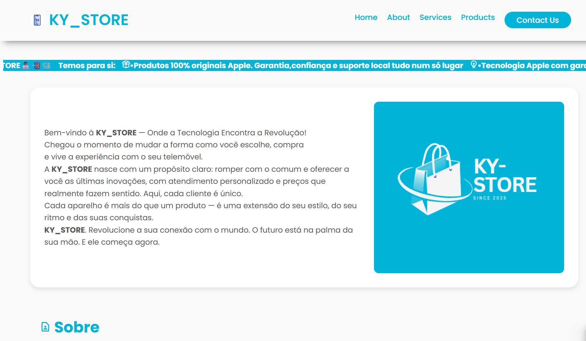
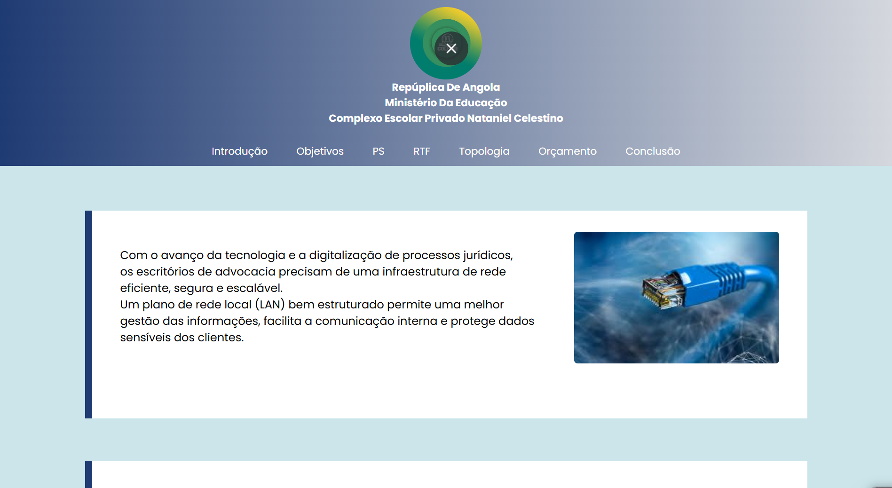
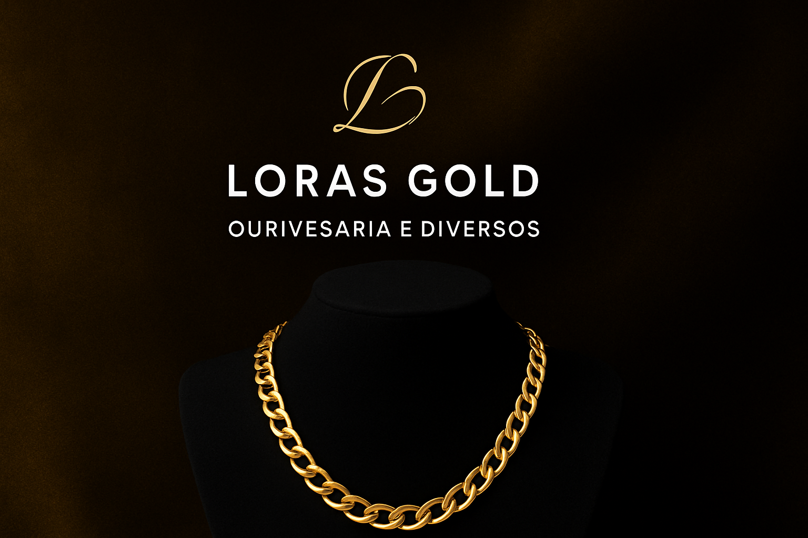
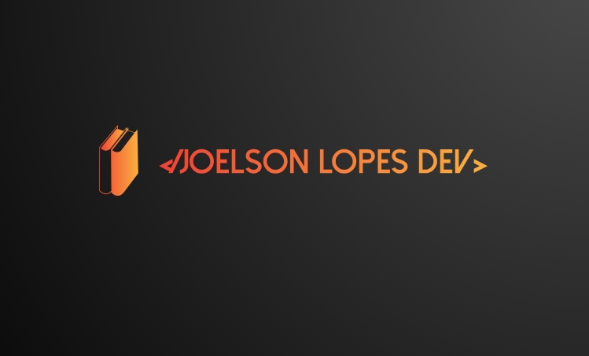
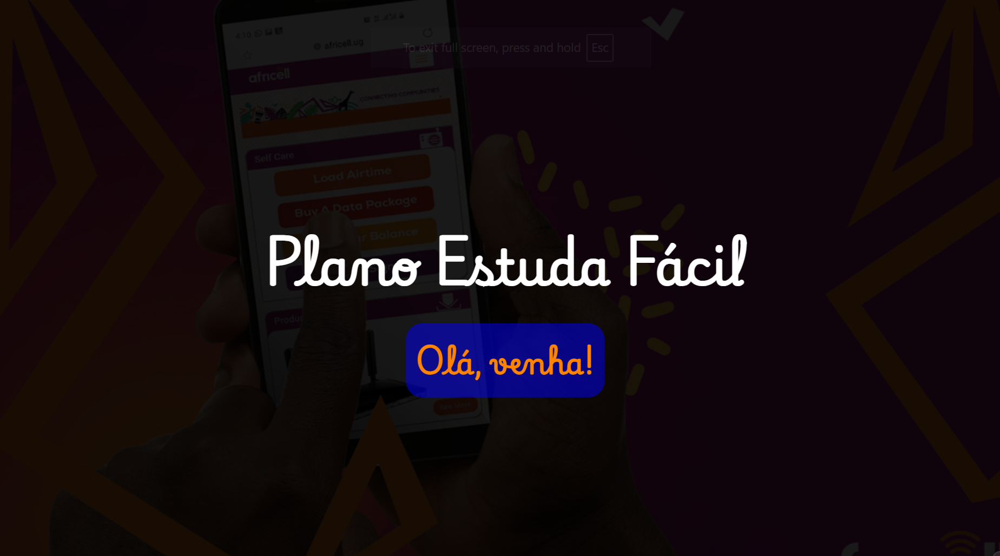
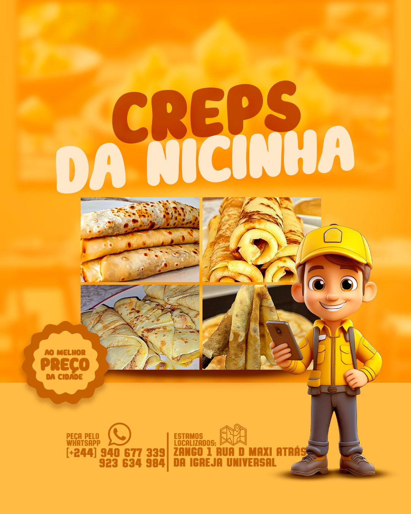

Joelson De Jesus
Front-End Developer, estudante do Curso de Informática e Gestão. Apreciador de tecnologia! Um desenvolvedor web apaixonado por criar soluções inovadoras e eficientes.
{kind=link}
Minhas skills
HTML5
90%
CSS3
85%
JavaScript
20%
PHP
15%
Comunicação
100%
Trabalho em equipe
95%
Adaptabilidade
90%
Liderança
85%
Formação
2025 - 2025
Cursa
Governança da TI
2024-2025
CC50 - Fundação Escolar
Fundamentos da Ciência da Computação
2024 - 2025
Curso em Vídeo
Especialização em Desenvolvimento Web (HTML5 - CSS3)
2024 - 2025
Curso em Vídeo
Fundamento e Especialização em Redes de Computadores
2024 - 2024
Curso em Vídeo
Git & Github
2023 - 2025
Colégio Nataniel Celestino
Informática de Gestão
Projetos

2025
Ky-Store
Loja virtual de telemóveis e diversos.
Saiba mais...
A KY-Store é uma loja virtual especializada na venda de produtos Apple, como iPhones, MacBooks, AirPods e Apple Watch. Oferecendo uma experiência de compra agradável, com atendimento personalizado e negociação transparente. Trabalhamos com produtos novos e recondicionados, e realizando entregas em toda a cidade de Luanda.

2025
Projeto LAN Advocacy
Projeto construído para o desenvolvimento de técnicas de implementação/aplicação de uma rede local num escritório de advocacia
Saiba mais...
Com o avanço da tecnologia e a digitalização de processos jurídicos, os escritórios de advocacia precisam de uma infraestrutura de rede eficiente, segura e escalável. Um plano de rede local (LAN) bem estruturado permite uma melhor gestão das informações, facilita a comunicação interna e protege dados sensíveis dos clientes.

2025
Loras Gold | Ouriversaria e Diversos
Portfólio Moderno e Minimalista!
Saiba mais...
A Loras Gold é uma empresa especializada na compra e venda de ouro, telemóveis e outros serviços financeiros. Com anos de experiência no mercado, oferecemos avaliações justas e transparentes para garantir a satisfação dos nossos clientes. Nossa missão é proporcionar soluções rápidas e confiáveis para quem deseja transformar seus bens em dinheiro de forma segura.

2024
Modelo 1 De Portfólio
Projeto construído para treinar os meus primeiros passos no mundo do desenvolvimento web.
Saiba mais...
Este projeto é um capítulo da minha trajetória/jornada como sendo um desenvolvedor web, pois ele retrata na minha linha de tempo aquilo que eram os meus primeiros conceitos e registros.

2024
Plano De Comunicação Da Africell
Projeto construído para revolucionar os planos de comunicação dos estudantes a nível nacional.
Saiba mais...
Este projeto de comunicação visa revolunionar o mercado tecnologico e informativo angolano, fornecendo aos estudantes rapidez eficácia e boa experiência de usuário no que toca a comunicação e desenvolvimento de matérias a nível de ouro.

2024
Creps da nicinha
Empresa de Culinária online
Saiba mais...
Venda de Creps, entrega em toda à parte de Luanda